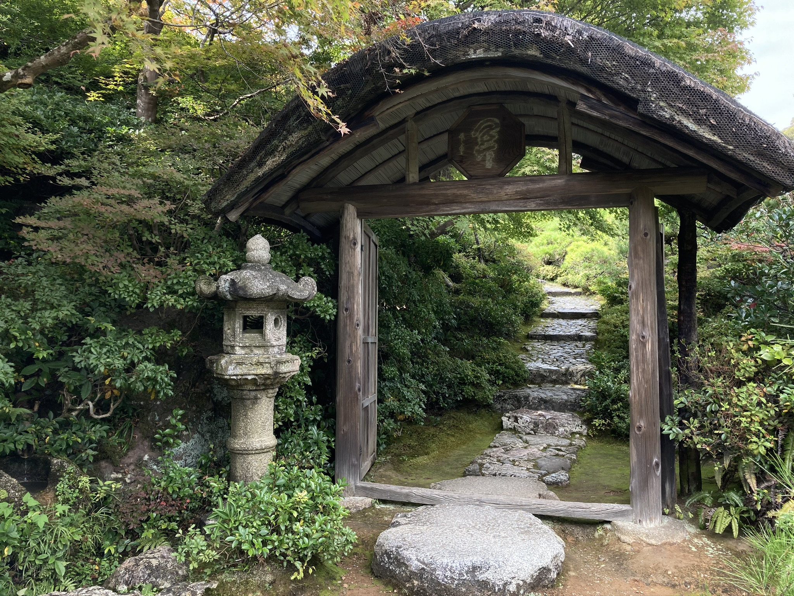

The Dream
Like most kids, I grew up watching cartoons when my mother had nothing else for me to do or when she'd leave me to my own devices. In the mornings, she would drop my younger sister and I off at summer camp geared towards younger kids (we were almost 7 years apart) while she worked as an OR nurse. I remember having breakfast cereal out of small rectangular box full of sugar and watching Sailor Moon before the sun even came up. This cartoon was different. It was pretty and fantastical. Not like Bugs Bunny or the jagged lines of American cartoons at the time. Usagi Moon was my first introduction to anime. As I grew older, I wanted to find more. Lo and behold, Cartoon Network created Toonami as the growing number of audiences fell in love with anime at the same time I did and it became far more accessible. Then it was manga. Then it was anime conventions. Then it became college courses of Japanese culture and religion. I developed this want not just to visit Japan, but to live there. I wanted to know what it would be like to breathe the air, to walk and know the people, to visit the mountains and forests and understand what it meant to

Arrival
I quit my job, sold or gave away all my possessions, and left the remaining few with my partner including the love of my life, Beowulf, a red-haired chow chow german shepard mix that I rescued 8 years prior. I left on the first month of the year in 2020 after 6 months of unemployment and anxiously waiting for my visa to arrive. I walked through those security gates with tears in my eyes and a hula hoop over my shoulder, hugging my best friend and my partner, and hoping the time in between the next one would not be so long. I stopped in California to say goodbye to my family. It seemed like they themselves couldn't understand my reasoning for wanting to leave a perfectly good job and my partner, and who was going to take care of Beowulf? Later on, I came to struggle with my decision of going to Japan. Why would I leave a perfectly good relationship, a stable job, and my beautiful dog behind? Why would I leave the family I'd always wanted behind? The flight to Tokyo was 12 hrs from Los Angeles non-stop. I arrived in the evening and took a 2 hour bus to the small city I would live in for the next 2 years. I have to admit, I was a little numb at first. It just felt like any other place, only new, with different signs everything, things I couldn't understand. I remember how close the buildings were to one another, how quiet my little suburban town was, how cold it was in the middle of winter. I didn't notice the dry air. I didn't notice how not to be noticed yet. I didn't understand or know the language at all. The honeymoon phase set in, and I was just happy to have made my dream come true. I did it. I was here. And I was going to make the most of it while I could.
